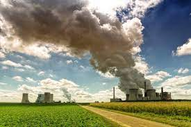

¿Qué es la contaminación del aire?
La contaminación atmosférica consiste en la presencia de
materias o formas de energía en el aire que pueden suponer
un riesgo, daño o molestia de diferente gravedad para los
seres vivos. Entre las consecuencias directas de la contaminación
atmosférica, se podría destacar el desarrollo de enfermedades
y afecciones en los seres humanos y la biodiversidad, así como
la pérdida de visibilidad en zonas de grandes concentraciones o
la aparición de olores desagradables.
La niebla gris que engloba las grandes ciudades es la forma
más común en la que se muestra que la contaminación del aire es
un problema real siendo ya visible ante nuestros ojos. El
aumento de gases de efecto invernadero está provocando un
calentamiento generalizado de nuestro planeta y el deterioro de
la capa de ozono. Ambos efectos suponen un peligro tanto para
la salud de los seres humanos como para la vida de los
ecosistemas que ven alterado su equilibrio ecológico.
La acción humana es la principal culpable de la contaminación
atmosférica. La quema de combustibles fósiles, como el carbón
o el petróleo, es una de las principales causas de este
problema ambiental que pone en peligro no solo a nuestra
naturaleza sino a nuestra propia salud.

¿Dónde se produce la contaminación del aire?
Estas emisiones tienen focos básicos producidos por el ser humano:
Industrias
En muchos países, la producción de energía es la fuente principal de la contaminación del aire, aunque no la
única. La quema de carbón por parte de centrales eléctricas o aquellas plantas basadas en diésel, son dos de las
fuentes de emisión más frecuentes y nocivas. De la misma manera, aunque en menor medida en comparación con las
anteriores, los procesos industriales y el uso de solventes en industrias químicas contribuyen a la
contaminación del aire y el calentamiento global.
Frente a esta problemática, se incentiva globalmente a las industrias por medio de políticas y programas a nivel
internacional para que realicen un uso eficiente de energía e inviertan en fuentes renovables de energía. Con
ello, se contribuye a que la actividades industriales logren una producción de energía más limpia, una mayor
eficiencia energética y una reducción de los efectos de la contaminación atmosférica.
Transporte
Cerca de 25% de todas las emisiones de CO2 (dióxido de carbón) relacionadas con la energía provienen del
transporte. Estas emisiones producen aproximadamente cerca de 400.000 muertes prematuras al año por la mala
calidad del aire. La mitad de ellas son consecuencia de la emisión de diésel debido a la emisión de óxidos de
nitrógeno. No cabe duda que el transporte actual es ineficiente, caro e insostenible al no poderse mantener al
mismo ritmo sin comprometer a las generaciones futuras.
Solo en España la contaminación ha provocado la muerte de cerca de 100.000 personas en la última década. Y es
que, según datos de Naciones Unidas, el coche causa el 13% de la contaminación del aire en los países miembros
de la Unión Europea. La soberanía del coche frente a otros medios más sostenibles es una tarea pendiente para
todos.
En las áreas urbanas con grandes concentración de población resulta imprescindible trabajar en políticas de que
contribuyan a la reducción de la contaminación del aire mediante. Por ejemplo, mediante el uso de combustibles
más limpios o la implementación de medios de transporte movidos por medio de energías renovables que no sean
nocivas para las personas.
Agricultura
En este sector hay dos fuentes principales que producen el 24% de todos los gases de efecto invernadero. Por un
lado, la quema de residuos agrícolas y, por otro, el metano y amoníaco que genera la ganadería. Las emisiones de
metano son especialmente destacables, puesto que afectan al ozono a ras de suelo. Esta contaminación del aire es
causante de enfermedades respiratorias y aumenta el asma. El metano, es además un gas de efecto invernadero
(aunque no siempre se refuerce esta idea) que tiene un impacto mayor que el CO2 a largo plazo (por ejemplo, en
períodos de 100 años).
Para reducir esta contaminación desde el sector agrícola, las personas que trabajan en él pueden llevar a cabo
una reducción del metano optimizando la digestibilidad de los alimentos, mejorando el pastoreo y con una gestión
más adecuada y sostenible de los pastizales. Pero el consumidor también es parte importante para reducir estas
emisiones. Por ejemplo, disminuyendo el consumo de carne o minimizando el desperdicio de alimentos, evitando de
este modo una sobreproducción basada en una amplia demanda de comida.
Residuos
Se calcula que el 40% de los residuos generados en el mundo y los desechos orgánicos se queman al aire libre, lo
que genera emisiones a la atmósfera de dioxinas nocivas, furanos, metano y carbono negro. Una problemática que
afecta especialmente a aquellas regiones o zonas que están en proceso de urbanización o a países en vías de
desarrollo.
Entre las estrategias para evitar los efectos de este tipo de contaminación atmosférica se encuentra la mejora
en la recolección, separación y eliminación de desechos sólidos. Con ello podría reducirse la cantidad de
materiales depositados en vertederos y posteriormente quemados al aire libre.
Al igual que en el sector agrícola, un menor desperdicio de alimentos ayudaría a reducir la cantidad de
deshechos orgánicos que hay que gestionar. Del mismo modo, una separación de estos y su conversión en compost o
bioenergía ayudaría a la mejora de la fertilidad y la calidad del suelo, generando además una manera de crear
una fuente de energía alternativa, más limpia y sostenible para el aire.
Hogares
La contaminación del aire desde el ámbito doméstico es nociva en dos maneras. Por un lado, porque es el aire que
las personas respiran en sus hogares de manera directa, produciendo a medio y largo plazo enfermedades
respiratorias; por otro lado, porque repercute en el aire exterior. La fuente de esta contaminación proviene de
la quema de madera y combustibles fósiles para actividades como cocinar, calentar o iluminar los hogares.
Aunque en términos generales, el 85% de los hogares tienen acceso a fuentes de energía más limpias, al menos en
97 países del mundo, lo cierto es que se estima que aproximadamente 3.000 millones de personas continúan usando
combustibles sólidos, lo cual es una cifra muy elevada que produce una gran cantidad de emisiones contaminantes
al aire.
Mantener la calidad en el aire es fundamental para la supervivencia de las personas y las especias que viven en
la Tierra. Los efectos de la contaminación atmosférica pueden ser fatídicas para las especies, puesto que la
polución afecta de manera negativa en su salud, propiciando el desarrollo de enfermedades y afecciones de
diferentes tipos, como la respiratoria. Como siempre, existen una serie de consejos que podemos seguir y que
pueden tener un gran impacto en la protección de la calidad del aire que respiramos.